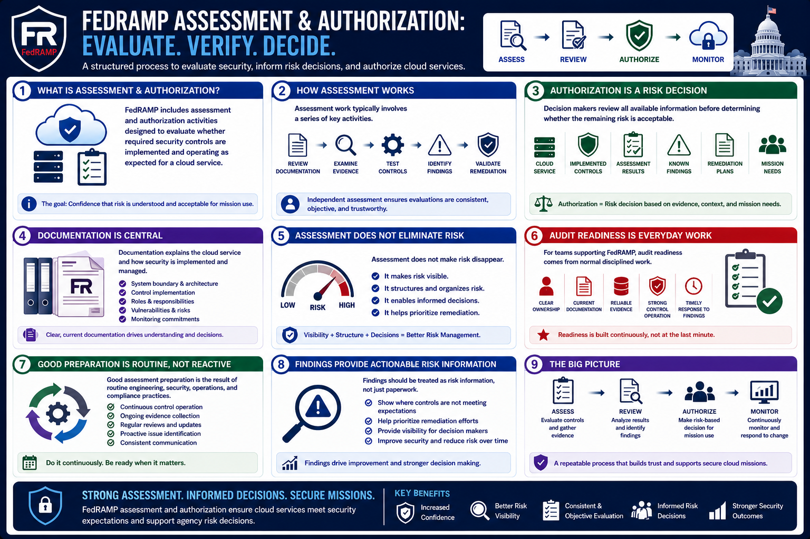

What Is FedRAMP?
Assessment and Authorization
Connecting to LMS... Progress: in progress
Version 1.0 | Date: 2026-06-16 | Educational overview of FedRAMP concepts.

Narration
FedRAMP includes assessment and authorization activities designed to evaluate whether required security controls are implemented and operating as expected for a cloud service.
Assessment work typically involves reviewing documentation, examining technical and procedural evidence, testing control implementation, identifying findings, and validating remediation where appropriate.
Independent assessment plays an important role because agencies and stakeholders need confidence that controls were evaluated consistently and objectively. Assessment results become part of the security information used for authorization decisions.
Authorization is a risk decision. Decision makers review the cloud service, implemented controls, assessment results, known findings, remediation plans, and mission needs before deciding whether the remaining risk is acceptable for a particular use.
Documentation is central to the process because it explains the system boundary, architecture, control implementation, roles, responsibilities, vulnerabilities, risks, and monitoring commitments.
Assessment does not make risk disappear. It helps make risk visible, structured, and reviewable so organizations can make informed decisions and prioritize remediation.
For teams supporting FedRAMP, audit readiness comes from normal disciplined work: clear ownership, current documentation, reliable evidence, strong control operation, and timely response to findings.
Good assessment preparation is therefore not a last-minute scramble. It is the result of routine engineering, security, operations, and compliance practices that continuously produce accurate evidence.
Findings should be treated as risk information, not only as paperwork. They help teams identify where controls need improvement, where remediation should be prioritized, and where decision makers need visibility.